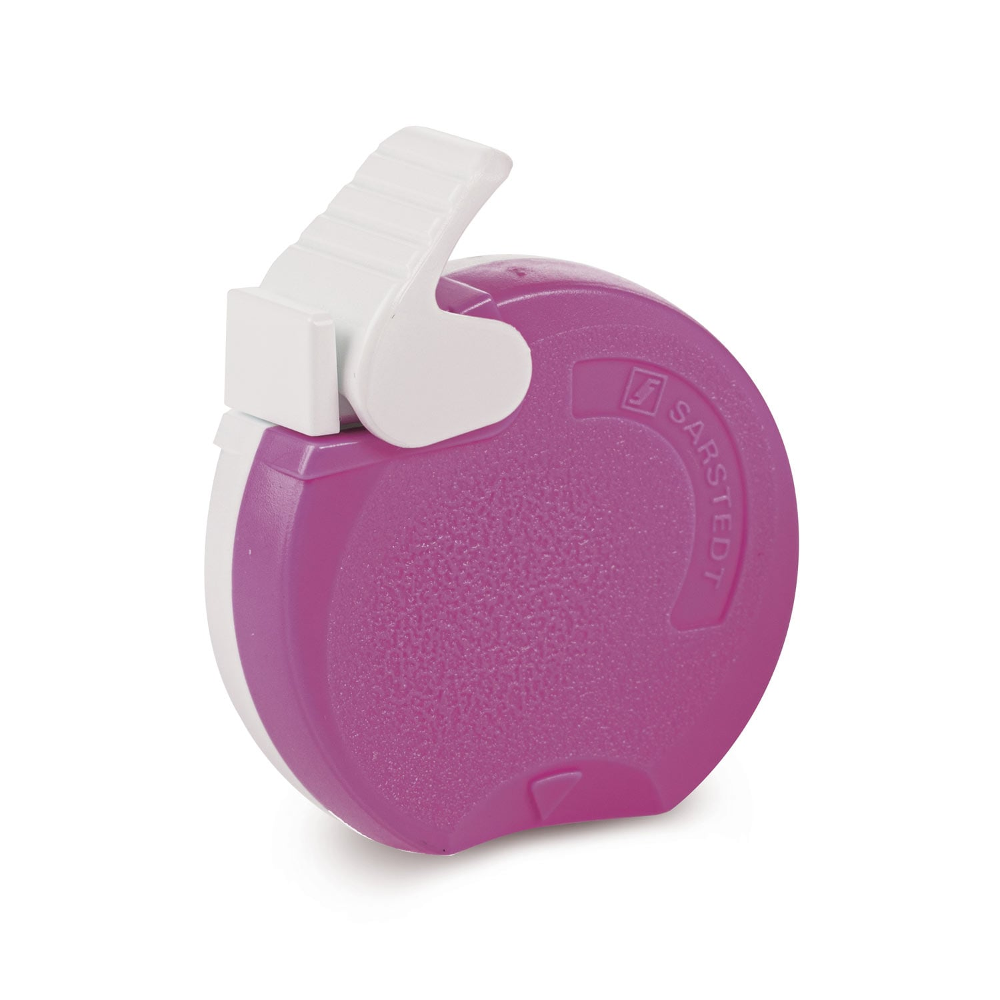
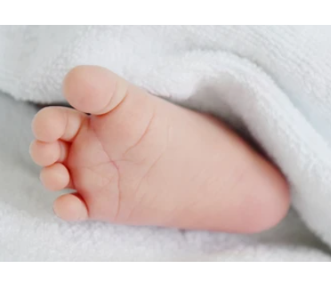
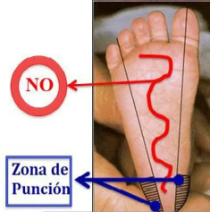
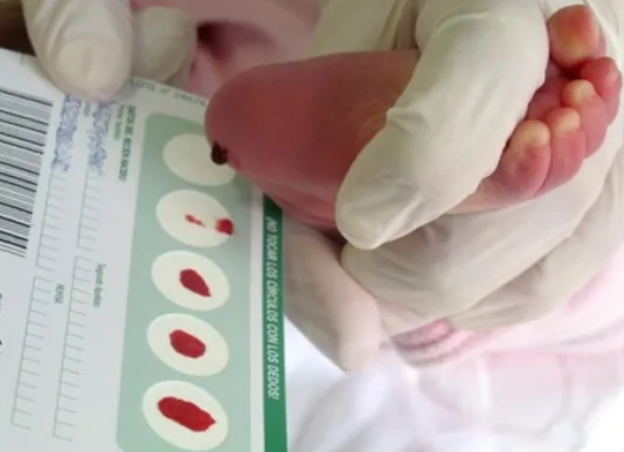
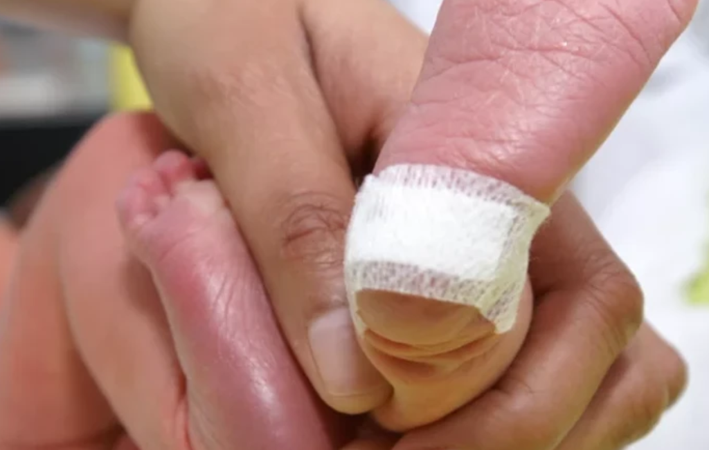

Simulador de punción talonaria para neonatos

La punción del talón es una técnica médica utilizada en neonatos para obtener una muestra de sangre capilar. Esta muestra se utiliza para realizar pruebas de cribado neonatal, que permiten detectar precozmente enfermedades metabólicas, endocrinas, genéticas y otras condiciones que pueden afectar la salud del recién nacido.
El procedimiento implica realizar una pequeña punción en el talón del neonato utilizando una lanceta estéril. Es importante seguir los pasos adecuados para garantizar la seguridad y el bienestar del bebé durante el proceso.
Procedimiento a seguir

Paso 1: Preparar el equipo y materiales necesarios: lanceta estéril, alcohol, gasas, tarjetas de recolección, guantes y protección personal.

Paso 2: Limpiar y desinfectar el área del talón con alcohol para prevenir infecciones.

Paso 3: Realizar la punción con lanceta en la superficie plantar lateral o medial, a una profundidad adecuada para obtener sangre capilar.
Hacer la punción en un solo movimiento rápido y seguro, en dirección casi perpendicular a la superficie del pie.
Evitar el área central del talón y la curvatura posterior para prevenir lesiones en nervio o huesos.
Paso 4: Recoger las gotas de sangre la tarjeta de filtro, formando gotas grandes y evitando que el pie toque la tarjeta.

Paso 5: Aplicar presión con una gasa estéril durante unos minutos y cubrir para detener el sangrado.